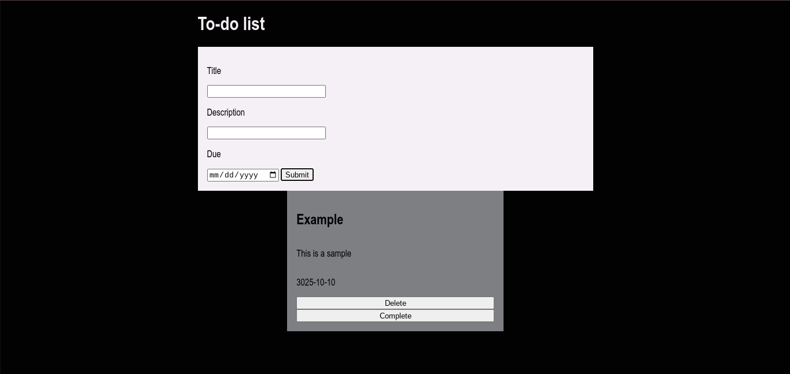

This list gives you something to use instead of using a paper to-do list. You can also save things and delete them later when you complete them or can't do them any more. This project was made using java script, css, and html. The html has all of the words and the buttons. The css was used to position everything and to style the background. The java script was used to make the buttons work. It was used to help you add a date that you need to get it done and the ability to save, delete, and complete tasks.
